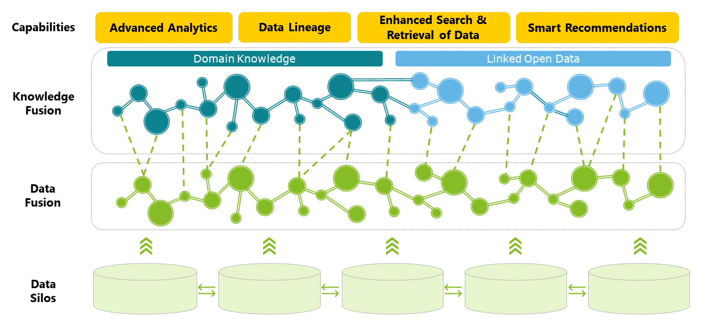

Connect datasets in a meaningful way

Want to learn more?
Get in Touch
Do you want to enable machines to incorporate human expertise to make meaningful decisions and bring context to AI applications?
Dr. Ali Khalili
Junior Manager Risk Advisory
alkhalili@deloitte.nl
+31650074011
Janvier Jessurun
Senior Manager Risk Advisory
jjessurun@deloitte.nl
+31683339436

Marko van Zwam
Partner Risk Advisory
mvanzwam@deloitte.nl
+31621272904